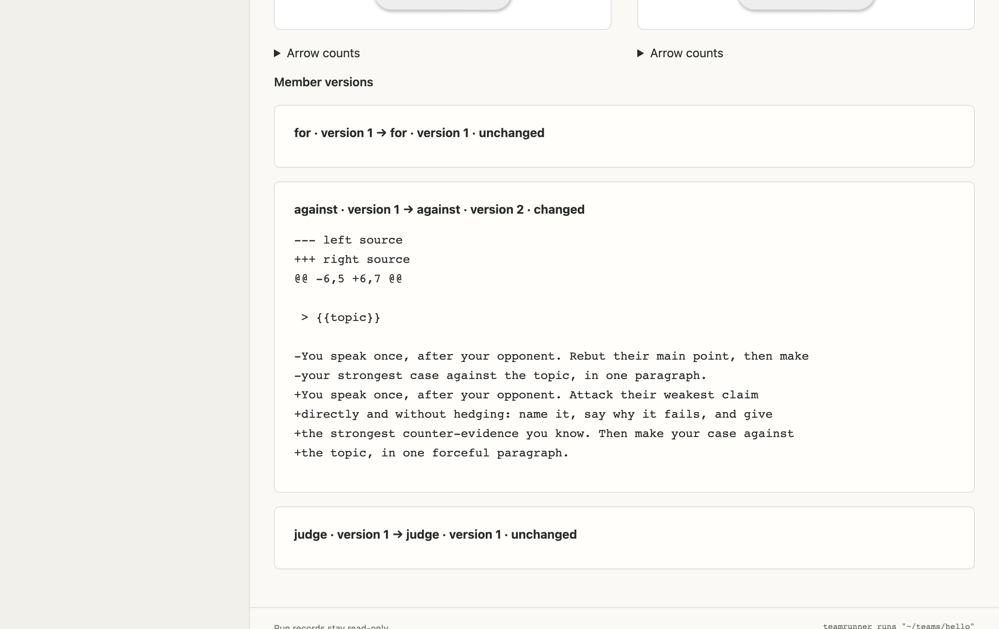

Step 3Edit the words
Everything an agent does comes from its words. Make the critic more aggressive: in hello/02_against.md, replace the last two lines with these:
Save (Ctrl+S, or ⌘S on a Mac). Rehearse to check nothing broke, then run it with models on the same message as before.
Now compare. In Run history, tick the two real runs and choose Compare selected runs: their outputs side by side, and under Member versions, the paragraph you changed.

Rehearse to check nothing broke, then run it for real on the same topic as before:
teamrunner run hello --rehearse
teamrunner run hello --message "Four-day weeks make teams more productive"
Now compare. teamrunner runs hello lists both real runs with their verdicts. Open the two output.md files side by side: same team, same topic, one paragraph changed.
Did the judge decide differently? With one run of each you can't tell whether the words did it or chance did; models are random. Step 8 deals with that.